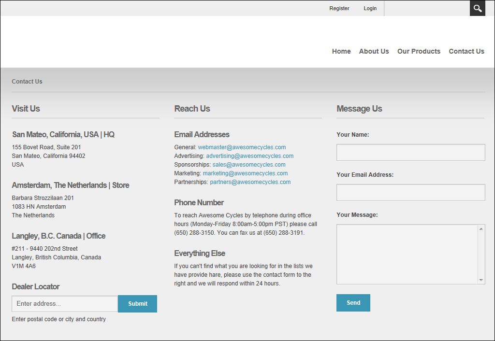

DNN uses a modular design system to display content on a page. One or more modules are added to each page allowing you to create and manage content. There are many different types of modules, each managing a different type of site content or site administrative task.
DNN supports a number of Project Modules which are maintained by active DNN community members and freely distributed as open source projects. These Project Modules can be deployed and installed on your site for no charge. The wider DNN community also produce and sell commercial modules. DNN modules and other types of extensions can be obtained from the DNN Store (http://store.dnnsoftware.com/).
Many of the modules that are located on the Admin Console pages can also be deployed and added to site pages. These modules (sometimes referred to as Admin or Administration modules) enable authorized users to undertake site administrative tasks, such as managing user accounts, security roles and vendor accounts.
Your Host (SuperUsers) can install additional modules.

Note: All users can perform the following actions on modules, however these actions may be disabled on one or more modules: